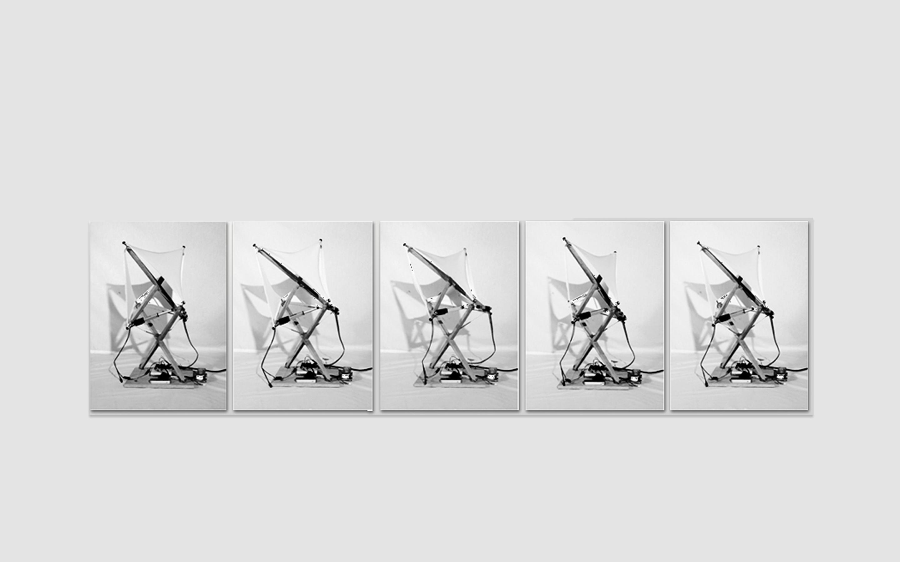
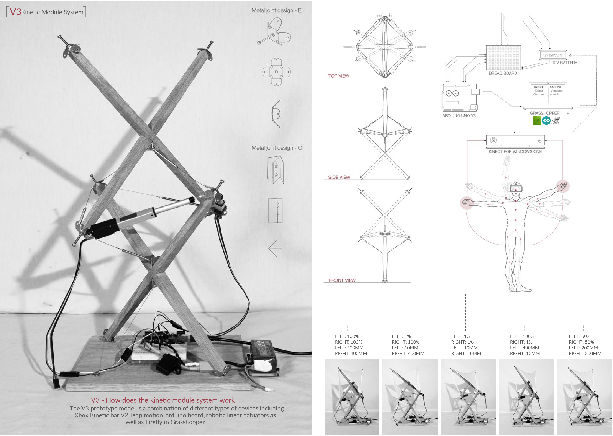
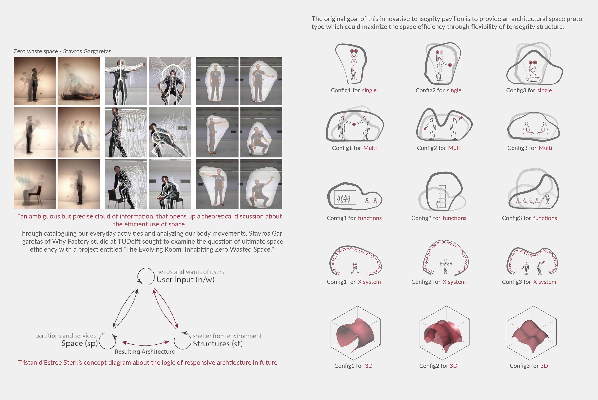

Exploration on kinetic tensegrity "X" module"
Project Type: Interactive installation
Roles: Designer & maker & coder
Team: Individual
Timeline: Fall 2015
X module tensegrity was designed by Kenneth Snelson in 1948, this new assembly of two "x-modules" represents the first step in a construction process -- adding module after module -- that can be expanded indefinitely. Each open quadrant of any module offers a place to connect yet another x-module.
However, as the most "flexible" light weight structure system, it's still has the limitation due to the complexity of its cable system. In this project, I proposed several materials to replace the typical type of tensile member we had used in our tensegrity sculpture to explore more possibilities.
Through a series of exploration among adujustable turnbuckles, Nitnol memorial wire as well as kinetic actuator, I developed a prototype which including arduino, microsoft kinect 2.0, two linear robitic actuator as well as Firefly plugin in Grasshopper to do the control.
The movement of the X module is following the height of left & right hand.
The robotic tensegrity prototype is a pre-research for the Breathing Pavilion Project. The intention of this innovative pavilion is to brainstorming the possibilities of applying the kinetic tensegrity system to the real-world architectural space which could maximize the space efficiency and flexibility through this structural system.

The ideal methods of conducting a tensegrity simulation is using kangaroo. However, Kangaroo has its limitation on the calculation efficency and accuracy. What I proposed in this project is a customized scripts which will directly read the input surface and generating the nodes right on top of it.
Although what I showed at this project during that time was using a X truss system, I’ve learned in the last two years that double tetra is the way to go in the current construction field. The script below mainly using for generating and rotating the X shape on different normal vector.
In this project, I choose glassfiber as the main material for the compression member due to its stiffness and weight. The image below shows two possibilities of using different cover on top of the structure, one is the simple film which will provide the most free of form transformation, while the other is a solar responsive cover system.
During that time the base has been designed as a two way sliding system in order to maximize the possibility of structure configuration. However, with double tetra system, I don’t need to do this.